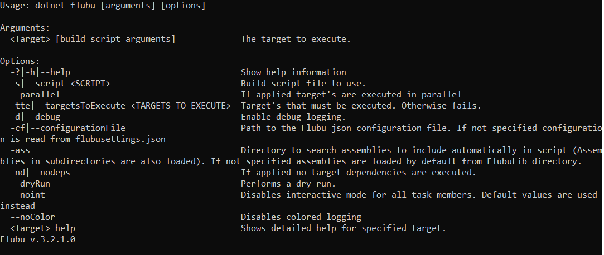

Build script runner
In .NET you run flubu build scripts with console application flubu.exe. Add Flubu.Runner nuget to get the console application.
In .NET core you run flubu build scripts with dotnet command line tool or global tool. Add FlubuCore nuget. You also have to add dotnet-flubu as dotnet cli tool reference to project. How to add it as dotnet cli tool see getting started section.
Usage¶
.NET core usage: dotnet flubu {TargetToExecute} {Flubu options} {build script arguments}
.NET core global tool usage: flubu {TargetToExecute} {Flubu options} {build script arguments}
.NET usage: flubu.exe {TargetToExecute} {Flubu options} {build script arguments}
Multiple target execution¶
.NET core usage: dotnet flubu {TargetToExecute} {TargetToExecute2} {TargetToExecute3...} {Options}
.NET usage: flubu.exe {TargetToExecute} {TargetToExecute2} {TargetToExecute3...} {Options}
Target's can be executed in parallel with added -parallel option
Flubu options¶

target help¶
List all available targets:
flubu help
dotnet flubu help
Target specific help:
flubu {TargetName} help
dotnet flubu {TargetName} help
It displays all tasks with description that will be executed by target. It also displays which argument(with description) can be passed through to specific task in target.
Default build script locations¶
-
“BuildScript.cs”
-
“DeployScript.cs”
-
“BuildScript/BuildScript.cs”
-
“buildscript/deployscript.cs”
-
“buildscripts/buildscript.cs”
-
“buildscripts/deployscript.cs”